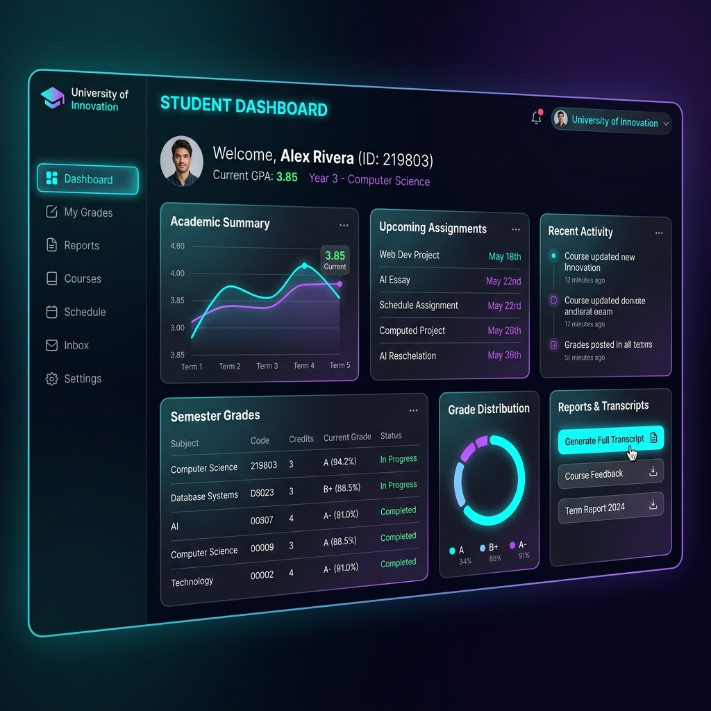

Plataforma integral para la Universidad UPTP Juan de Jesús Montilla

Como líder de desarrollo, diseñé e implementé un sistema completo para la administración y corrección de notas, actualmente en uso por las diferentes sucursales de la universidad.
El principal desafío era crear un sistema robusto que pudiera manejar la gran cantidad de registros de estudiantes, manteniendo al mismo tiempo una interfaz ágil y amigable para el personal administrativo y docente.